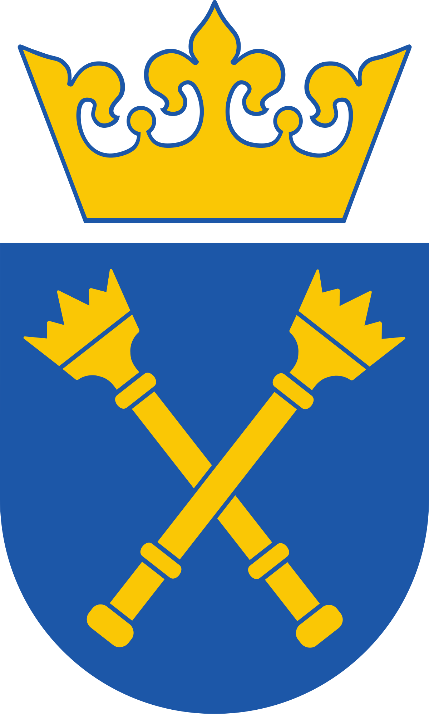
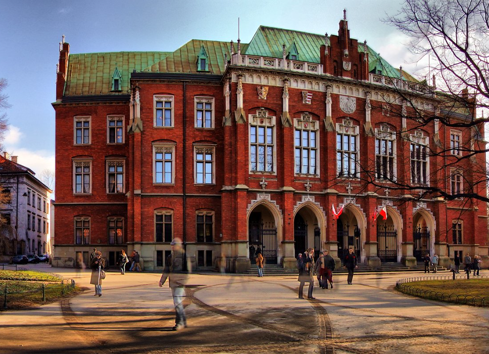

Wydział Prawa i Administracji UJ
Wydział Prawa i Administracji Uniwersytetu Jagiellońskiego w Krakowie to jedna z najbardziej
prestiżowych jednostek akademickich w Polsce, z tradycjami sięgającymi czasów średniowiecza.
Powstały wraz z założeniem Uniwersytetu w 1364 roku przez króla Kazimierza Wielkiego, wydział
odgrywa istotną rolę w kształceniu prawników i specjalistów w dziedzinie administracji.
Wydział oferuje szeroki wybór kierunków i specjalizacji, które odpowiadają współczesnym
potrzebom rynku pracy oraz wyzwaniom globalnym. Studenci mają dostęp do zajęć prowadzonych
przez wybitnych ekspertów, a także do bogatych zasobów naukowych i projektów badawczych.
Wydział Prawa i Administracji UJ współpracuje z wieloma ośrodkami naukowymi na całym świecie,
wspierając wymianę wiedzy oraz rozwój nauk prawnych i administracyjnych w skali międzynarodowej.
Jest to miejsce, które łączy tradycję z nowoczesnym podejściem do edukacji i badań.
 